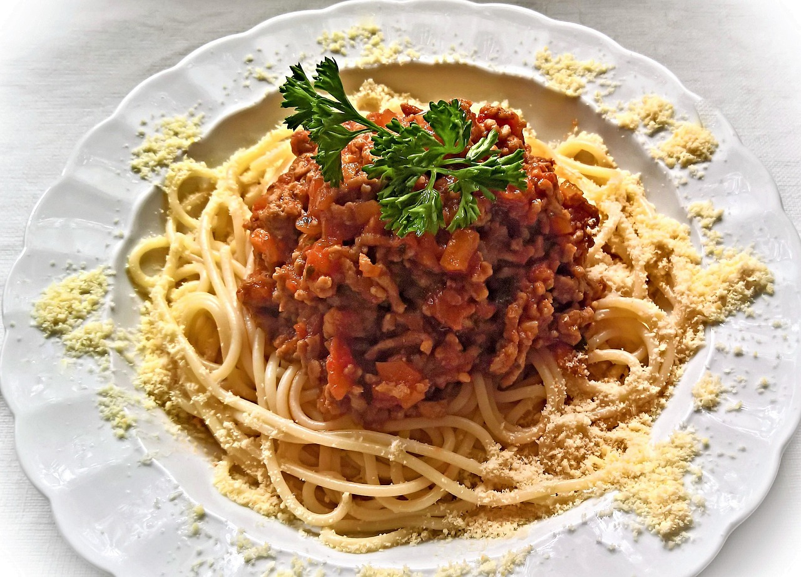

Spaghetti Recipe
Back to Home

Image by ❤ Monika 💚 💚 Schröder ❤ from Pixabay
Everyone needs a great everyday Spaghetti Bolognese recipe, and this is mine! The Bolognese Sauce is rich, thick and has beautiful depth of flavour. It’s perfect for a quick midweek meal but even better if you can simmer it for a couple of hours! Serve it over pasta, stuff into jacket potatoes, make an epic Lasagna or Baked Spaghetti Pie!
Ingredients:
- 1 1/2 tbsp olive oil
- 2 garlic cloves
- 1 onion
- 1 lb / 500g beef mince (ground beef)
- 1/2 cup (125 ml) dry red wine
- 2 beef bouillon cubes
- 800g / 28 oz can crushed tomato
- 2 tbsp tomato paste
- 2 tsp white sugar
- 2 tsp Worcestershire sauce
- 2 dried bay leaves
- 2 sprigs fresh thyme
- 3/4 tsp cooking salt (kosher salt)
- 1/2 tsp black pepper
To serve
- 400 g / 13 oz spaghetti
- Parmesan cheese
Instructions:
- Sauté – Heat oil in a large pot or deep skillet over medium high heat. Add onion and garlic, cook for 3 minutes or until light golden and softened.
- Cook beef – Turn heat up to high and add beef. Cook, breaking it up as your go, until browned.
- Reduce wine – Add red wine. Bring to simmer and cook for 1 minute, scraping the bottom of the pot, until the alcohol smell is gone.
- Simmer – Add the remaining ingredients. Stir, bring to a simmer then turn down to medium so it bubbles gently. Cook for 20 – 30 minutes (no lid), adding water if the sauce gets too thick for your taste. Stir occasionally.
- Slow simmer option: really takes this to another level, if you have the time! Add 3/4 cup of water, cover with lid and simmer on very low for 2 – 2.5 hours, stirring every 30 minutes or so. (Note 5) Uncover, simmer 20 minutes to thicken sauce. (Note 6 for slow cooker)
- Taste and add more salt it desired. Serve over spaghetti – though if you have the time, I recommend tossing the sauce and pasta per steps below.
Tossing sauce and spaghetti (optional)
- Bring a large pot of salted water to boil. Add pasta and cook per packet directions MINUS 1 minute.
- Scoop out a mug of pasta cooking water and set aside, then drain the pasta.
- Add pasta into the bolognese sauce with about 1/2 cup (125 ml) of reserved pasta water over medium heat. Toss gently for 1 1/2 – 2 minutes, or until the spaghetti turns red and the sauce thickens.
- Divide between bowls. Garnish with parmesan and parsley if desired.